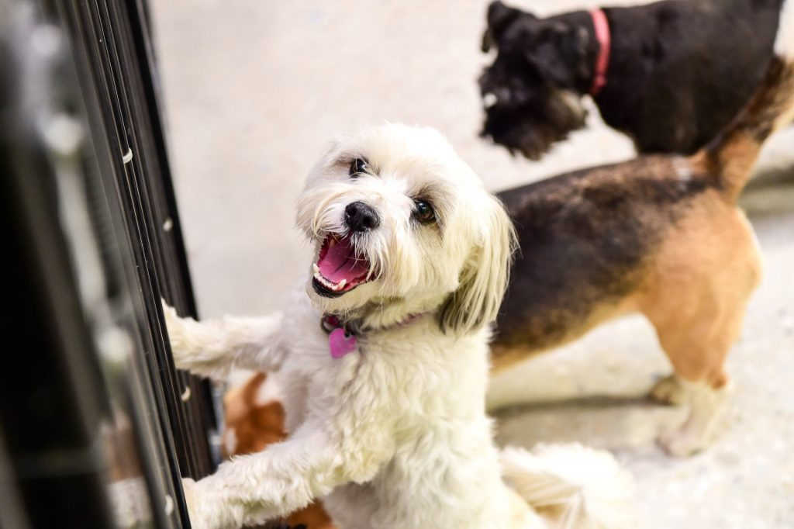
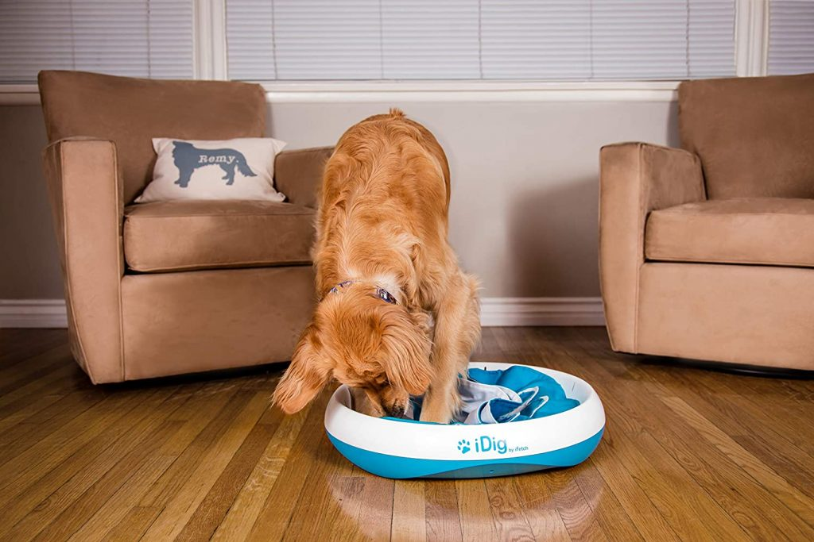

مشکلات رفتاری در سگ ها مهم ترین چالش صاحبان اون هاست. هرچقدر زندگی با یه سگ آموزش دیده و حرف گوش کن لذت بخشه، زندگی با سگ تربیت نشده، بد رفتار و حرف گوش نکن سخت و انرژی گیره.
در این مقاله میخوایم ۷ اختلال رفتاری رایج در سگ ها (که جون صاحباشون رو به لب رسوندن) رو با هم بررسی کنیم و ببینیم چطور میشه این مشکلات رفتاری رو برطرف و تربیت سگ رو اصلاح کرد.
مشکل رفتاری سگ به چه معنیه؟
مشکلات رفتاری در سگ ها به مشکلی میگن که به هر دلیلی باعث آزار و اذیت صاحب سگ بشه و زندگی با سگ رو دشوار کنه و قابل برطرف کردن باشه.
برای مثال :
- گاز گرفتن سگ
- پارس کردن سگ
- بالا پریدن روی مهمان
- احساس تملک داشتن روی اشیاء
- و حتی کشیدن قلاده موقع پیاده روی
همه جزو اختلالات رفتاری سگ ها هستن. شاید به نظرتون بی رحمانه بیاد که یه سگ رو بخاطر اذیت شدن خودمون اذیت کنیم و بهتره باشه اجازه بدیم هرطور دلش میخواد رفتار کنه!
خب در اینجا باید بگم با نگاهی به تعداد سگ هایی که به دلیل مشکلات رفتاری به پناهگاه ها واگذار میشن یا آسیب های شدید میبینن، یا توی خیابون یا جلوی در کلینیک های دامپزشکی رها میشن متوجه میشیم که برطرف کردن مشکلات رفتاری در سگ ها فقط به نفع ما نیست و در نهایت خود سگه که زندگی بهتر و آسوده تری کنار صاحبش خواهد داشت.
زندگی کنار یه سگ حرف گوش کن و خوش رفتار خیلی لذت بخش تر و طولانی تر از یه سگ اذیت کن و خودسره.
یادتون نره که: یه سگ خوش رفتار یه سگ خوشبخته! چون هیچ کس یه سگ بدرفتار رو دوست نداره.
توجه کنین که مشکلات رفتاری بخاطر ایراد در تربیت سگ به وجود میان و اصلاح مادام العمر اون ها نیازمند تغییر اساسی در آموزش و تربیت سگ هست.
اگر توجیه شدین که چرا باید اختلالات رفتاری در سگ مون رو تشخیص بدیم و رفعشون کنیم، در ادامه متن با دانشنامه حیوانات خانگی پت پُرس همراه باشین تا ۱۰ تا از مشکلات رفتاری متداول و راهکارهای اون ها رو تشخیص بدیم و رفع کنیم.
۱. واق واق کردن سگ (همون پارس کردن سگ در زبان قدیم!)
آیا پارس کردن سگ همیشه یه مشکل رفتاریه؟
متاسفم اشتباه حدس زدین! همه سگ ها تا حدی پارس میکنن و این کار جزو طبیعتشونه. شما نمیتونین طبیعت حیوان رو یه مشکل رفتاری محسوب کنین!
ولی پارس کردن بیش از حد سگ که با دستور شما متوقف نشه، یه مشکل رفتاری بزرگ و خیلی فاجعه آمیزه.
سگ ها به دلایل مختلفی پارس میکنن و خیلی مواقع پارس کردن اون ها میتونه مفید باشه. برای مثال وقتی نصفه شب یه آدم غریبه دزدکی وارد حیاط خونتون بشه و سگ شما بر و بر نگاش کنه و هیچ هشداری نده قطعا توی ذوقتون میخوره!!
پس پارس کردن بعضی اوقات میتونه یه آپشن باشه، مثلا برای سگ نگهبان میتونه یه عامل بازدارنده به حساب بیاد.
رفع مشکل پارس کردن سگ ها
سگ ها با پارس کردن با ما ارتباط برقرار میکنن به همین دلیل پارس کردن سگ ها نمیتونه بی دلیل باشه. اگر سگتون زیاد پارس میکنه اول باید مشخص کنین دلیلش چیه.
مهم ترین دلایل پارس کردن سگ ها این موارد هستن:
- هشدار دادن
- هیجان
- نیاز به توجه گرفتن
- اضطراب
- سر رفتن حوصله
- پاسخ دادن به پارس سگهای دیگه
وقتی متوجه شدین سگتون در چه مواقعی بیشتر پارس میکنه، باید بهش یاد بدین در اون شرایط واکنش مناسب رو نشون بده.
برای مثال اگر وقتی یه شخص غریبه میاد کنار در خونه و سگ شما برای هشدار دادن شروع به پارس کردن میکنه، باید بهش یاد بدین فقط ۱ واق کنه و بعد بشینه و منتظر بمونه.
پارس کردن سگها دلایل مختلفی داره و راه حل هرکدوم متفاوته. برای ترک عادت پارس نا به جای سگها با یه مقاله امکان پذیر نیست. برای همین در دوره جامع تربیت سگ، قسمتی رو با عنوان همه چیز درباره پارس کردن سگ و رفع این مشکل اختصاص دادیم که این مشکل رو کامل از بیخ و بُن توضیح داده و همه راهکارهای برطرف کردنش رو بهتون آموزش میده.
با عمل کردن به دستورات این دوره، سگ رو درست تربیت کرده و یک بار برای همیشه رفتار پارس کردن نا به جای سگتون رو اصلاح کنید! علاوه بر رفع این مشکل، تمام رازهای تربیت و آموزشهای مختلف برای سگتون رو یاد بگیرین.
این مشکل همیشه نمیتونه مشکل باشه، برای مثال زمانی که شما دارین سگ نگهبان آموزش میدین، یکی از آموزش های اولیه اون پارس کردن هست. مهمترین فاکتور بهترین سگ های نگهبان دنیا اینه که بتونن در مواقع لازم پارس کنن و به متجاوز و غریبه ها بفهمونه که اصلا شوخی نداره و نباید وارد حریم و قلمرو اون بشن. اگه میخوایین به توله سگتون پارس کردن رو یاد بدید، پیشنهاد میکنم مقاله آموزش پارس کردن سگ رو حتما بخونین چون کلی نکنه جذاب براتون آماده کردیم.
۲. رفتار خشونت آمیز (با همه بله، با ما هم بله؟)
رفتار خشونت آمیز در سگ ها لزوما به معنی حمله ور شدن و گاز گرفتن نیست! و نشون دادن خشونت اگر همراه با حمله یا آسیب نباشه به این معنی نیست که رفتار مناسبیه! بخصوص اگر این رفتار خشونت آمیز رو در برابر صاحبشون نشون بدن.
خشونت در سگ با علائم زیر نشون داده میشه:
- غرولند کردن
- دندان قروچه کردن
- نشون دادن دندان ها
- جهش به سمت کسی یا چیزی
- گاز گرفتن
البته ما در مقاله «رفتارهای خشونت آمیز در سگ ها» به بررسی دلایل عصبانیت و خشونت سگها می پردازیم تا بتونیم سگمون همیشه آروم نگه داریم.
رفع مشکل پرخاشگری و خشونت در سگها
سگ شما باید این حقیقت رو درک کنه که این شمایین که شرایط رو کنترل میکنین نه اون! برای فهموندن این مطلب به سگ باید براش حد و مرزها رو مشخص کنین. هیچ چیز، و تکرار میکنم، هیچ چیز نباید به دلخواه سگ شما پیش بره. خوردن غذا و تشویقی، بازی کردن، بیرون رفتن و حتی نوازش نباید موقعی انجام بگیرن که سگ دلش میخواد بلکه باید موقعی که شما تشخیص میدین انجام بشن.
بسته به نژاد سگ، در برخی از نژادها بیشتر و برخی کمتر این رفتار دیده میشه.
اینطوری به مرور زمان سگ هم متوجه این موضوع میشه و چون درک میکنه که خشونت روی شما تاثیری نداره و نمیترسوندتون، این رفتار رو ترک میکنه.
نکات مهم در رفع خشونت سگها
- موقعی که خشونت سگ رو دیدین، با بی خیالی واکنشی نشون ندین و ازش نترسین. به واکنشش بی توجهی کنین و برای مدتی تنهاش بگذارین. هروقت در موارد مشابه خشونت نشون نداد، تشویقش کنین (تاییدیه مثبت) و خشونتش رو نادیده بگیرین.
- به زندگی اش نظم ببخشین تا متوجه بشه رئیس کیه.
- اگر خشونت ناگهانی بروز کرد و برای مدتی ادامه پیدا کرد، برای چکاپ به کلینیک دامپزشکی ببریدش
- در صورتی که همه این کارها جواب نداد، با یه مربی سگ مشورت کنید
- از تولگی برای تربیت سگ ، آموزش دادن و اجتماعی کردنش وقت بگذارین
۳. دلیل لجبازی سگ و بی توجهی به دستورات (یا به عبارت دیگه، ضایع کردن صاحب!)
یکی از آزاردهنده ترین و ناامید کننده ترین مشکلات رفتاری در سگ ها لجبازی و گوش ندادن به حرف صاحبشونه. وقتی شما اسم سگتون رو صدا میزنین و توجه نمیکنه یا با شنیدن “نه” یا “نکن” به کارش رو ادامه میده، این بی توجهی و لجبازی سگ میتونه سبب مشکلات رفتاری دیگه هم بشه.
متخصصان رفتارشناسی سگ ها، بی توجهی به دستورات رو به دو حالت فعال و غیرفعال تقسیم میکنند. حالت غیر فعال وقتیه که سگ شما وقتی بهش دستوری رو میدین هیچ اهمیتی بهتون نمیده و حالت فعال (که مشکل اصلی رو ایجاد میکنه) وقتیه که سگ شما از بی توجهی کردن به دستورات و نافرمانی، لذت میبره.
خیلی حس بدی داره جلوی دوستانتون یا توی یه جمع خانوادگی، سگتون رو با صدای بلند صدا بزنین و اون اصلا به روی خودش نیاره که صدای شما رو شنیده! خوشتون نیومد، نه؟ پس این مشکل رو اصلاح کنین!
اصلاح مشکل بی توجهی به دستورات
معمولا تاییدیه منفی روی سگ هایی که این مشکل رو دارن، جواب نمیده. برای رفع این مشکل این کارها رو انجام بدین:
- سگ رو دعوا و تنبیه نکنین، این کار فقط مشکل رو بدتر میکنه
- دنبالش ندوید و داد نزنید
- انرژی اش رو هرروز تخلیه کنید. (پیشنهاد میکنم مقاله تخلیه انرژی سگ بخونین)
- با نظم دادن به الگوی غذا خوردن، بازی و رفتن به پیاده روی، برتری خودتون رو نشون بدید
- پس از دیدن بی توجهی به دستورات تا نیم ساعت طوری با سگ برخورد کنید انگار که براتون نامرئیه
- هربار به حرفتون گوش داد به شدت با دادن تشویقی و بازی باهاش، تشویقش کنید
- روزانه بیش از ۴ ساعت تنها نگذارین

۴. کشیدن قلاده توسط سگ ( مگه نکشیدن هم داریم؟!)
همه ما دوست داریم موقعی که با سگمون راه میریم از پیاده روی لذت ببریم و این کار برای ما و سگمون آرامش بخش باشه نه استرس زا. به محض اینکه از خونه بیرون میرین سگ شما هیجان زده میشه و سعی میکنه جلوتر از صاحبش بره و همه چی رو بو کنه و به اکتشاف دنیا مشغول بشه!
خیلی از صاحبین سگ ها عادت کردن وقتی با سگشون بیرون میرن مدام مجبور باشن محکم بند قلاده اش رو نگه دارن و در برابر کشیدن مداوم سگ، مقاومت کنن. برخی از افراد هم فقط بند قلاده رو نگه میدارن تا سگ فرار نکنه ولی هرجا که خواست دنبالش میرن و اجازه میدن مسیر رو تعیین کنه! کشیدن قلاده توسط سگ وقتی پیش میاد که سگ سعی کنه جلوتر از شما راه بره و تمایل داشته باشه مسیر رو تعیین کنه.
حقیقتی بهت آور برای شما:
کشیدن قلاده و جلو زدن سگ از شما یه مشکل رفتاری هست. یه سگ نرمال، کنار صاحبش راه میاد نه جلوتر از اون
این مشکل علاوه بر اینکه ناخوشاینده، خطرناک هم هست. چون به محض اینکه به هر دلیلی بند قلاده از دست شما در بره، سگ جلو جلو میدوه و ممکنه گم بشه یا با یه ماشین تصادف کنه.
رفع مشکل رفتاری کشیدن قلاده توسط سگ
برای رفع این مشکل باید راه آموزش رفتن سگ با قلاده رو بهش بدین.
- برای این آموزش از قلاده گردنی استفاده کنین
- بند قلاده رو تا جای ممکن کوتاه کنین تا سگ تون نتونه جلوتر از شما راه بره
- جلسات پیاده روی تون رو کوتاه ولی متعدد و مفرح برگزار کنین
- همیشه تشویقی همراه داشته باشین تا اگر کنار شما راه رفت، تشویقش کنین
 ۵. اضطراب جدایی در سگ ها (از جلوی چشمم دور بشی میترسم)
۵. اضطراب جدایی در سگ ها (از جلوی چشمم دور بشی میترسم)
این مشکل رفتاری یکی از ناراحت کننده ترین مشکلات رفتاری در سگ هاست و اتفاقا خیلی متداول هم هست. به این شکل بروز پیدا میکنه که سگ موقع دور شدن از صاحبش استرس میگیره و رفتارهایی رو از خودش بروز میده. بی قراری، ترس، هیجان منفی و افسرده شدن به محض دوری از صاحب، جزو این رفتارها هستن.
آیا این طبیعی نیست که وقتی ما از سگمون دور باشیم سگ ناراحت و دپرس بشه؟
جواب: خیر! طبیعی نیست! اگر سگ شما اینطوری میشه یعنی مشکل اضطراب جدایی داره.
این مشکل تربیتی، معمولا باعث مشکلات رفتاری دیگه ای مانند دستشویی کردن سگ در خونه، جویدن وسایل منزل و پارس کردن بیش از حد، هم میشه. سگ ها وقتی اضطراب جدایی از صاحبشون رو تجربه میکنن، به هر رفتاری متوسل میشن تا استرس خودشون رو تخلیه کنن و رفتارهای بالا هم از این قاعده مستثنی نیستن.
اگه میخواین بدونین در نبود شما حیوونتون چه احساساتی رو تجربه میکنه، ویدیوی زیر رو ببینین:
علت استرس سگ و رفع مشکل رفتاری اضطراب جدایی سگ از صاحبش
رفع این مشکل نیاز به صرف زمان زیادی برای آموزش های پیوسته داره. دلایل استرس و اضطراب سگ میتونه خیلی از چیزها باشه: توله سگی که تازه به خونه آوردید وارد یه محیط کاملا جدید و ناآشنا شده و همه چیز براش ترسناک و استرس آوره. همینطور حضور یه سگ یا حیوون دیگه هم میتونه باعث حس خطر و استرس سگتون بشه. سر و صداهای بلند، شلوغی و حضور آدمای غریبه در خونه و … میتونه باعث ترس سگتون بشه. در بسیاری از موارد با آموزش و تربیت میتونید مشکل رو حل کنید. اما در مواردی که اضطراب جدایی خیلی شدید باشه، دامپزشک حتی ممکنه داروی آرام بخش برای سگ تجویز کنه.
پایه و اساساس رفع این مشکل فهموندن این حقیقت به سگه که شما همیشه برمیگردید.
این کارها رو انجام بدین:
- در فواصل کوتاه مدت (مثلا ۵ یا ۱۰ دقیقه ای) تنهاش بگذارین و از خونه بیرون برین. کم کم این زمان رو برطبق واکنش سگتون، افزایش بدین.
- در مدتی که خونه نیستین از اسباب بازی سگ ها و استخوان های جویدنی کمک بگیرین تا سگتون سرگرم بشه.
- همیشه قبل از بیرون رفتن و تنها گذاشتنش انرژی اش رو تخلیه کنین (با بازی هایی که نیاز به دویدن دارن و پیاده روی های بیش از ۴۵ دقیقه)
- سگ ها رو نباید روزی بیش از ۴ ساعت تنها گذاشت. اگر شاغل هستین سگ نگیرین!
- قبل از تنها گذاشتن سگ در خانه آموزش های لازم رو بهش بدید و اقداماتی رو برای سرگرم شدنش فراهم کنید.
وقتی سگ رو در خانه تنها میگذارید، باید محیط خانه رو برای تنها گذاشتنش آماده کرده، مشکل اضطراب جدایی اش رو حل کنید و بهش کمک کنید وقتی خونه نیستید راه هایی برای سرگرم کردن خودش داشته باشه.
اگر سگ خودتون رو گاهی در خونه تنها میذارید، به کتاب تربیت سگ جامع ما مراجعه و بخش راهنمای تنها گذاشتن سگ در خانه را مطالعه کنید.
در این بخش این کتاب در ۱۴ مرحله توضیح میدیم چه کارهایی انجام بدید که وقتی خونه نیستید، خیالتون از بابت تنها موندن سگ راحت باشه، وقتی برگشتید چی کار کنید و چطوری یه مشکل رفتاری مهم در سگ هایی که مدت زیادی تنها میمونن به نام اضطراب جدایی رو تشخیص بدید و رفع کنید.

۶. علت بی قراری سگ در شب
اینم یکی دیگه از مشکلات رفتاری سگ هاست که خواب راحت از چشم ما میگیره. سگها عادت زوزه کشیدن و ناله کردن در شب رو از اجداد گرگشون به ارث بردن و هنوز هم در موقعیت های مختلف ازش استفاده میکنن. دلایل مختلفی میتونه برای بی قراری سگ موقع شب وجود داشته باشه.
- جلب توجه
- اعلام حضور خود به دیگران
- واکنش به صداهای خیلی بلند (مثل رعد و برق)
- زوزه کشیدن به خاطر تنها موندن و اضطراب جدایی
- به خاطر درد، بیماری و مشکل سلامتی
علت بی قراری توله سگ
اگه تازه یه توله سگ رو به خونه آوردید و شبها از صدای ناله کشیدنش خواب راحت ندارید احتمالا دلیلش اضطراب جدایی و استرس توله است. توله تازه از مادر و خواهر و برادراش جدا شده و وارد محیطی کاملا جدید و غریبه شده؛ پس بهش حق بدید که بترسه و از اضطراب زوزه بکشه. علاوه بر این برخی تولهها موقع قرار گرفتن در باکس و قفس مضطرب میشن و زوزه میکشن؛ توله با زوزه کشیدن داره میگه «من میترسم، منو تنها نذارید!»
رفع مشکل بیقراری سگ در هنگام شب
برای حل این مشکل اول باید دلیل بیقراری سگتون رو متوجه بشید.
- اگه سگتون تازه به خونه جدید اومده پس دلیلش میتونه ترس از تنهایی باشه. در این صورت باکسش رو موقتا در نزدیکی محل خوابتون قرار بدید تا بتونه شما رو ببینه و بدونه که تنها نیست. بعدا به مرور جای خوابش رو دور کنید تا بالاخره عادت کنه از تنهایی نترسه و آروم بخوابه.
- اگه سگتون رو در طول روز بیرون نبرید و باهاش بازی نکنید ممکنه انرژی تخلیه نشدهشو به صورت بیقراری و سر و صدا کردن نشون بده. حتما برای سگتون وقت بذارید و با توجه به نژادش در روز نیم الی ۱ ساعت برای بازی و فعالیت بیرون ببریدش تا شب آروم و خسته بخوابه.
- پیشش برید و هربار که ساکت شد بهش تشویقی بدید. دقت کنید که موقعی که داره سر و صدا میکنه بهش تشویقی ندید چون این کارشو تایید میکنید. بهش یاد بدید که ساکت موندن چیزیه که شما تایید می کنید.
اگه سگتون زیاد بیقراری میکنه و روش های بالا جواب نداد ممکنه بیمار باشه و به خاطر درد و ناراحتی بیقراری می کنه. پس حتما با دامپزشک مشورت کنید.
۷. علت پنجه کشیدن سگ به زمین
پنجه کشیدن به زمین هم از عادتهایی که از جداد گرگ به سگ به ارث رسیده و دلایل مختلفی داره. سگها (و گرگها) در طبیعت عادت دارن با پنجه کشیدن در زمین چاله درست کنن تا یه لونه گرم و امن برای خودشون درست کنن.
چاله کنی علاوه بر حس امینتی که به سگ میده برای پیدا کردن دمای مطلوب هم هست. مثلا اگه سگتون در هوای گرم تابستون دائم پنجه شو به زمین میکشه احتمالا گرمشه و میخواد با چاله کندن تو خاک یه جای خنک برای خودش درست کنه. برعکس این موضوع هم وجود داره: اگه هوا سرد باشه با چاله کنی و پنجه کشیدن روی زمین دنبال یه لونه گرم برای خودش می گرده.
دلیل دیگه تعیین فلمرو هست. سگ ها از پنجه گرما رو دفع میکنن و عرقشون بویی مخصوص داره که برای سگهای دیگه قابل شناساییه. سگ شما با پنجه کشیدن در جاهای مختلف خونه داره قلمرو خودشو به بقیه سگهای خیالی نشون میده و میگه «هی! این طرفا نیا چون مال منه!»
یه دلیل دیگه هم میتونه سرگرمی باشه! بله، اگه سگتون حوصلهش سر رفته باشه ممکنه با پنجه کشیدن سعی کنه یه سرگرمی و بازی واسه خودش دست و پا کنه.
رفع مشکل پنجه کشیدن سگ به زمین
اول از خودتون بپرسید واقعا پنجه کشیدن سگتون یه مشکله؟! خیلیا مشکلی با این قضیه ندارن اما اگه سگتون روی جای خوابش یا وسایل خونه پنجه میکشه و خرابکاری میکنه پس با یه مشکل واقعی روبرو هستیم.
شرایط زندگی سگتون رو بررسی کنید
آیا جاش به اندازه کافی راحته؟ آیا محل خوابش دمای مطلوبی داره؟ زیادی گرم یا زیاد سرد نیست؟ آیا جای خوابش محل رفت و آمد و شلوغی و سر و صداست؟ سگتون تو جای خوابش حس امنیت داره؟ اکثر سگها جای خواب گرد رو ترجیح میدن که لبه هاش کمی بالا اومده و حس لونه امن و راحت رو به سگ میده.
سگتون بی حوصله است؟
اگه دلیل پنجه کشیدن سگتون بی حوصلگیه خب راه حلش مشخصه. با سگتون بازی کنید و براش وقت بذارید. سگها بسته به نژادشون به ساعات مختلفی از فعالیت نیاز دارن. بعضی نژادها مثل ژرمن و هاسکی فعالترن و باید در طول روز چند ساعت فعالیت کنن تا انرژی فوق العاده زیادشونو تخلیه کنن.
اضطراب و استرس
یه وقتایی سگ در محیط زندگیش حس اضطراب و استرس داره و با پنجه کشیدن دنبال راه فراره! ما مطمئنیم که شما به عنوان صاحب سگ بهترین شرایط رو برای سگ عزیزتون فراهم میکنید؛ اما بد نیست این مورد رو هم بررسی کنید و ببینید آیا چیزی داره سگتون رو میترسونه و اذیت می کنه؟!
بیماریهاری پنچه سگ
در برخی موارد مشکلات پزشکی و سلامتی هم میتونه منجر به این رفتار بشه. اگه تمام موارد بالا رو بررسی کردید و دلیل پنجه کشیدن سگتون رو متوجه نشدید شاید بهتره با یه دامپزشک مشورت کنید. اگه میخواین در مورد این بیماریها اطلاعات بیشتری داشته باشین، پیشنهاد میکنیم مطلب پنجه سگ رو هم مطالعه کنین.

حالا نوبت شماست…
آیا این مقاله برای شما مفید بود؟ سگ شما به کدوم یکی از این مشکلات رفتاری مبتلاست؟ چه راههایی رو برای رفع این مشکل امتحان کردین؟ لطفا توصیههاتون رو با پت پرس و کاربرهای دیگه درمیون بگذارین.


سلام . من یک سگ گلدن رتریور ۶ ماهه دارم . چند هفته ای هست که هیجانی میشه و گاز میگیره . مثلا موقع پیاده روی بند قلاده رو میگیره و میکشه و بعد میاد سمت آدم و میخواد لباس رو بگیره . یا اینکه اسباب بازیش رو میاره و همونطور که تو دهنش داره ، لباس و یا دست رو میگیره . منظورش به بازی کردن هست و دوست داره دنبالش کنیم . ولی اگر این کار رو بکنیم ، بدتر میکنه و صدای غرولند در میاره . این رفتار برای سنش طبیعیه ؟ میشه کنترل کرد ؟ چی کار باید بکنم ؟
سلام حامد عزیز،
بله گاز گرفتن و هیجانی شدن برای سگ و گربه خصوصا تو بچگی طبیعی هست بدلیل رفتار شکار کردن و بازی کردن ولی اگه کنترل نشه در آینده میتونه واستون دردسرساز بشه. سنشم برای تربیت شدن مناسبه و اگر وقت بذارین سریع یاد میگیره.
پیشنهاد میکنم کتاب زیر رو مطالعه کنین:
راهنمای جامع تربیت سگ ، از تولگی تا بزرگسالی
سلام خسته نباشید
من به تازگی یک توله ۲ ماهه پامرانین خریدم و شبها که همه اعضای خانه خواب هستن هر یک ساعت یا دو ساعت یکبار میاد داخل اتاقم و در رختخواب و شروع میکنه خیلی اروم دست یا گوشم را لیس میزنه ولی اصلا سر و صدا نمیکنه و بعد که بیدار میشم دوباره میبرمش به محل خوابش و تا یکی دو ساعت خبری ازش نیست . اول اینکه علتش چیه و دوم اینکه چه کار باید کرد که این کار را انجام نده . ضمنا تا حالا هیچ واکنش تندی به کارش انجام ندادم و مثلا شب در اتاق را نبستم و همچنان در محل خواب خودش گذاشتمش.
سلام بابد تربیتش کنید که جاهایی که نمیخواید وارد بشه مثل اتاق خواب نره
پیشنهاد میکنم کتاب جامع تربیت پامرانین رو مطالعه کنید ، اموزش این مورد هم داخلش هست:
کتاب تربیت سگ پامرانین
سلام یه سگ اشپیتز میکس دارم ۱ساله اینقدر خرابکاره یه جای سالم نذاشته خونمون ، علاقه زیادی به جویدن داره تا غافل میشم خونه رو گند میزنه البته دیگه هیچ جای سالمی نمونده ، ایا این رفتارشو میشه تغییر داد ؟ خستم کرده
توی پت شاپ ها یه اسپری هایی میفروشن که سگ ها از بوشون خوششون نمیاد.از اون اسپری ها بخرید و به وسایل خونتون بزنین احتمالا مشکل رو برطرف میکنه.
اشپیتز سگ پر انرژی ای هست و دلیل این کارش میتونه تخلیه انرژی و سرگرم شدن باشه.ایا سگتون رو هر روز بیرون میبرید؟به اندازه کافی باهاش بازی میکنید؟پیشنهاد میکنم زمان بیرون رفتن و پیاده روی رو بیشتر کنید.
وقتی به وسایل خونه اسیب میزنه بهش بگین”نکن”و با یک اسپری اب کمی اب به صورتش بپاشین تا بفهمه شما این کار رو دوست ندارین.اگه سگتون ازتون حرف شنوی نداره،احتمالا به این معناس که درست تربیتش نکردین و این موضوع بعدا براتون مشکل ساز میشه.به مربی سگ مراجعه کنید
سلام سخته نباشید ببخشید من ی سگ نگهبان اصفهان دارم تازه خریدم اصلأ رفتارش ی جوریه فقط میخاد فرار کنه نمیدونم چی کار کنم
رسول جان
اگر توله است سگ شما ممکنه بخاطر ترس باشه، لازمه اجتماعی اش کنید و بهش آموزش بدید.
این کتاب رو مطالعه کنید بهتون کمک میکنه:
راهنمای جامع تربیت سگ ، از تولگی تا بزرگسالی
سلام وقت بخیر
من الان حدود یک ساله که یک سگ ۲ ساله گرفتم ماده است و الان وارد سه سالگیش میشه.
الفی خیلی دختر خوب و مهربونی و خیلی آرومه
ولی یه مشکل رفتاری خیلی بد داره که هنوز نتونستم حلش کنم
الفی به شدت با افراد دیگه جز من و مامان بده یعنی اولا که کلا با مردها مشکل داشت الانم فقط با بابام دوست شده و ما با پدر بزرگ مادر بزرگم زندگی میکنیم
حتی برادرم هم از دستش آسایش نداره
وقتایی داداشتم خوابه میره کنارش میخوابه میذاره نازش کنه ولی همین که از تخت میاد پایین یا میخاد بره جایی حمله میکنه و ما باید همیشه بذاریمش توی اتاق تا پاس نکنه
حتی بقیه خانواده وقتی غذایی میارن براش میره تو بغلشون ولی همین ک غذا رو خورد دوباره شروع به پرخاشگری میکنه
واقعا دیگه نمیدونم باید چیکار کنم الفی خیلی دختر خوبیه تنها همین مشکلو داره که هزار راه رو رفتم تا خوب شه ولی نشده
دیگه واقعا نمیدونم باید چیکار کنم؟
احتمالا قبل از اینکه شما به سرپرستی بگیرینش اجتماعی نشده بود.
چندتا از سگ های من هم این مشکل رو داشتن.دلیل اصلی مشکل سگ های من این بود که صاحب قبلی باهاشون بد رفتاری میکرد.
با مربی سگ و دامپزشکش مشورت کنید
دلم واسه این ی جمله کباب شد 🙁
یادتون نره که: یه سگ خوش رفتار یه سگ خوشبخته! چون هیچ کس یه سگ بدرفتار رو دوست نداره.
من یه سگ دارم که از ۴۰ روزگی داشتمش و الان وارد ۶ سال شده، حدود سه ماه قبل توی مسافرت سگی رو دیدم که صاحبش نهایت بدرفتاری رو باهاش داشت، سگ رو با طناب بسته بود پشت وانت و میخواست تو جاده چالوس بسپرس به هرکسی که نگهش داره تا از سفر برگرده، گفتم با مسئولیت من بده با خودم ببرمش مسافرت، اگر با ملوس خودم دعوا نکردن نگهش می دارم. خلاصه بردمش و اولش جنگ بود تا بعد با هم دوست شدن و از سفر برگشتیم و من به سرپرستی قبولش کردم، اما چشمتون روز بد نبینه ی خرابکار حرفه ای، از خراب کردن عروسک ها و تزیینات خونه بگیر تا دستشویی کردن رو تخت، تشک، فرش و …
خلاصه هر بار میام خونه ی جایی رو ترکونده
هم دوسش دارم هم واقعا نمیتونم این رفتارهاش و دیگه تحمل کنم، جلو مهمون یهو میاد وسط خونه دستشویی میکنه، وقتایی که خونه نیستم محدودش کردم به اتاق خواب تا کمتر خرابکاری کنه اما اتاق خواب واسه من نزاشته، جابجا دستشویی کرده و تخت که دیگه نابود شده، هرچی عروسک و تزیینات داشتمم ترکونده ک گفتم اشکال نداره وسایل و جمع کردم.
ماشالا اینقد هم انرژی داره ک همش در حال بدو بدو کردن و پریدن رو میز و مبل و تخت و دیوار و … هر چی ک فکرشو کنید. یه ریز میخواد با ملوس بازی کنه اما ملوس تا ی جایی بازی میکنه و بعدش خسته میشه و میره ی گوشه از دست بوگی خانم قایم میشه
نمیدونم باید باهاش چکار کنم پسش بدم ب صاحب نادون قبلیش یا دنبال خانواده بگردم براش یا بازم باهاش بسازم بلکه درست بشه رفتارش
لطفا راهنمایی کنید
سلام دوست عزیز لطفا بگید این سگ چندسالشه؟
احتمالا به این خاطره که انرژیش تخلیه نمیشه و سعی میکنه اینجوری خودش رو سرگرم کنه.هر روز حداقل ۱ساعت ببرینش پیاده روی تا انرژیش تخلیه بشه.
یک دلیل دیگه هم که ممکنه وجود داشته باشه جلب توجه شماست.شاید با خرابکاری کردن میخاد توجهتون رو جلب کنه.در طول روز چقدر براش زمان میزارین؟باهاش بازی میکنین؟باهاش حرف میزنین و نازش میکنین؟
و این رو به یاد داشته باشین که سگ های نجات یافته شرایط خاصی دارن.ترسو و شکسته ان و کسی برای تربیتشون وقت نذاشته.احتمالا یکی از دلایل خرابکاری کردنش همین باشه:استرس و اضطراب!!قبل از هر کاری بهش اطمینان بدین که همیشه پیشش هستین.باهاش حرف بزنین.صداتون رو پیشش بالا نبرین.کاری نکنین که اون رو یاد زندگی قبلیش بندازه.
تصمیم خودتونه،ولی به نظر من واگذارش نکنین.این سگ هرجا که بره همین رفتارو داره.ولی شما بیشتر از هر کسی با رفتار هاش اشنا هستین.صاحب جدید ممکنه به اندازه شما درکش نکنه و باهاش بدرفتاری کنه. جای پاک کردن مسئله،حلش کنین
و در اخر اگه هیچ کاری از دستتون بر نیومد به مربی سگ مراجعه کنید:)
سلام آرزو جان،
مرسی که نظرتون رو به اشتراک گذاشتین.
یک سوال آیا سگ بعد از واسکن هاری امکان داره این بیماری رو بگیره یا کسی رو گاز بگیره انتقال بده؟
سلام دوست عزیز با توجه به اینکه سوال شما شخصی هست، پاسخ بهش در قسمت دیدگاه ها امکان پذیر نیست.
لطفا برای راهنمایی گرفتن بهتر از طریق لینک زیر در سایت ثبت نام کرده و سوالتون رو مستقیم با دامپزشک مطرح کنید تا مشکلتون بررسی بشه:
دامپزشک آنلاین پت پرس
سلام ممنون ازراهنمایی های سودمندتون
من یه سگ هاسکی پنج ماهه روحدودیک هفته هست خریدم.نمیدونم صاحب قبلی چطوررابطه یابرخوردی بااین بی زبون داشتن که تحت فشارکه هست مثلاتاوقتی که بسته باشه حرف گوشکن میشه هم ارومه.به محض ازادشدنش حرف گوش که نمیذه هیچی باتندی وعصبانیت ازم دورمیشه وباپرخاش وحالت حمله به سمتم میادکه حس میکنم الان گازم بگیره ولی بازم تکرارمیکنه دورشدن وبازهم…وقتی بادردسرارومش میکنم ونوازشش میکنم سرشومیذازه روپاهام ولذت میبره ازنوازش اماسرپاست وخودشوکامل سفت نگه میداره.توروخداراهنماییم کنید خیلی اذیتیم .هم من هم اون بی زبون
سلام دوست عزیز سگ باید بهتون عادت و اعتماد کنه این فرصت بدید که این اعتماد و عادت کردنه براش ایجاد بشه،و رفتارهای واقعی اش رو نشون بده بعد شروع کنید به تربیت کردنش و میتونید از این کتاب هم استفاده کنید:
کتاب راهنمای تربیت سگ
خوب بود.
راستش ۲روز پیش ی سگ ۲یا سه ماهه خریدم.ی هاسکی سیبرین زرنگ و بازیگوش.ولی بهش یاد دادن بپره و دندون بگیره.نایلون توجهش رو جلب میکنه.میگن بزنش حسابی گاز نگیره.توی پارک وحشیانه چمن هارو میکنه.چکارش کنم؟؟؟؟
سلام دوست عزیز باید اصولی تربیتش کنید با زدن چیزی درست نمیشه، با این کتاب تربیتش رو شروع کنید:
ایبوک جامع تربیت سگ
سگی که ما ازش نگهداری میکنیم گهگاه همهی این ناهنجاریها رو از خودش نشون میداد، چندین سرپرست داشته از دوران تولگی و همه رهاش کردند. الان یکساله است، با مهمون و افراد بیگانه توی خیابون رفتار خوبی داره ولی حس مالکیت زیادی در همه جا خونه داره و اجازهی رفت و آمد نمیده و اگر از بخشی از خونه بخواهیم استفاده کنیم گاهی هشدار میده، غرولند و پارس میکنه و گاز میگیره. گاهی دلیلش رو نمیفهمیم چون مسئله ی غذا و اسباببازی هم نیست، گهگاه نسبت خود ما هم حس مالکیت نشون میده و نمیذاره به یکدیگر نزدیک بشیم بازی کنیم و بخندیم، غذا بخوریم و…
بهناز جان
ممنونیم که تجربت رو باهامون درمیون گذاشتی
سلام ممنون از راهنمایی ها و مطالب مفیدتون. من یه توله ژرمن دارم ک از ۳ ماهگی اوردمش خونه، و الان حدود ۵ ماهو نیمش هست، اویل بهتر گوش میداد ولی الان زیاد گوش نمیده، زیاد بازی گوشی میکنه و یه مدتم هست شروع کرده به گاز گرفتن و جویدن کفش و…. متاسفانه چند بارم عصبانی شدم ازش و داد زدم سرش. الان یکم میترسه ازمن، ینی تا ببینه ناراحتم و سری حالت گوشهاش عوض میشه و فرار میکنه، ک این موضوع خیلی ناراحتم میکنه، نمیدونم چیکار کنم، شبهام شروع میکنه به واق زدن حدود دوهفته اس، ممنون میشم راهنماییم کنید.
سلام محمدجواد عزیز اگر جواب سوال شمارو بخوایم بدیم باید بیست صفحه کامنت بنویسیم، لطفا این ایبوک رو مطالعه کن اینم لینکشه:
راهنمای جامع تربیت سگ ، از تولگی تا بزرگسالی
یا با یک مربی سگ مشورت بگیرید برای تربیت درست سگتون، و زودتر هم اقدام کنید تا سگتون بالغ نشده.